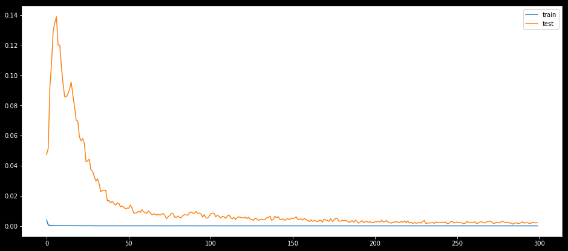
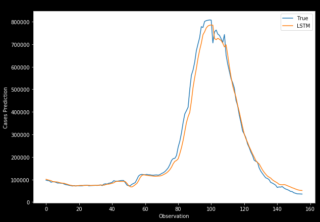

Long-term Short-term Time-series Modeling
It would be nice to predict the number of positive covid cases depending on past cases evolution. Regression models based on recurrent neural networks (RNNs) are proven to identify patterns in time series data and this allows us to make accurate short-term predictions.
The model used in the following example is based on long-term short-term memory (LSTM) model that uses more than one features to make informed predictions. LSTMs are recurrent neural networks that avoid the vanishing gradient problem prevalent in feed-forward type of algorithms by imposing filtering mechanisms in the gates using a technique known as back-propagation.
The following set of codes loads all the required Python libraries, packages, and subroutines required for LSTM modeling. This blog post is just intended to give a high level summary of how to realize a covid case count prediction in the United States using some convenient features readily available.
# Import various libraries and routines needed for computation
import math
import pandas as pd
import numpy as np
import tensorflow as tf
import matplotlib.pyplot as plt
import keras.backend as K
from math import sqrt
from numpy import concatenate
from matplotlib import pyplot
from pandas import read_csv, DataFrame
from sklearn.preprocessing import MinMaxScaler, LabelEncoder
from sklearn.metrics import mean_squared_error, mean_absolute_error
from keras.models import Sequential
from keras.layers import Dense, Dropout, LSTM
from keras.callbacks import EarlyStopping
from datetime import date, timedelta, datetime # Read in the data file that has relevant features
df = pd.read_csv('covid_final.csv')
dataset = df.set_index(['date'])
# Drop the last 10 row as they are incomplete
dataset.drop(dataset.tail(10).index,
inplace = True)
values = dataset.values
# Store the indexes (i.e., dates)
date_index = dataset.index# Clean up the dataset more for predictions and inverse transformations (Re-scaling)
data_clean = dataset.copy()
data_clean_ext = dataset.copy()
data_clean_ext['new_cases_predictions'] = data_clean_ext['new_cases_smoothed']
data_clean.tail()| new_cases_smoothed | reproduction_rate | new_tests_smoothed_per_thousand | new_vaccinations_smoothed_per_million | people_fully_vaccinated_per_hundred | total_boosters_per_hundred | stringency_index | |
|---|---|---|---|---|---|---|---|
| date | |||||||
| 2022-03-08 | 38934.286 | 0.65 | 2.748 | 621 | 65.24 | 28.89 | 53.24 |
| 2022-03-09 | 36641.429 | 0.66 | 2.699 | 601 | 65.25 | 28.91 | 53.24 |
| 2022-03-10 | 36330.429 | 0.69 | 2.613 | 583 | 65.27 | 28.94 | 53.24 |
| 2022-03-11 | 36104.714 | 0.71 | 2.580 | 557 | 65.29 | 28.97 | 53.24 |
| 2022-03-12 | 35464.143 | 0.71 | 2.561 | 540 | 65.30 | 28.99 | 53.24 |
# number of rows in the data
nrows = data_clean.shape[0]The day-to-day case counts can be regarded as a time series and the data needs to be prepared before training a supervised learning model. For LSTM, the data is composed of inputs and outputs, and the inputs can be seen as a moving window blocks consisting of the feature values to predict the outcome. The size of the window is a free parameter that the user must optimize.
# Convert the data to numpy values
np_data_unscaled = np.array(data_clean)
np_data = np.reshape(np_data_unscaled, (nrows, -1))# ensure all data is float
values = values.astype('float64')# Transform the data by scaling each feature to a range between 0 and 1
scaler = MinMaxScaler()
np_data_scaled = scaler.fit_transform(np_data_unscaled)# Creating a separate scaler that works on a single column for scaling predictions
scaler_pred = MinMaxScaler()
df_cases = pd.DataFrame(data_clean_ext['new_cases_smoothed'])
np_cases_scaled = scaler_pred.fit_transform(df_cases)In LSTM methodology, it is required to reshape the input to be a 3D tensor of samples, time steps, and features. This is more important when we are fitting the model later.
# Set the sequence length - this is the timeframe used to make a single prediction
sequence_length = 31 # rolling window size
# Prediction Index
index_cases = dataset.columns.get_loc("new_cases_smoothed")
# Split the training data into train and train data sets
# As a first step, we get the number of rows to train the model on 80% of the data
train_data_len = math.ceil(np_data_scaled.shape[0] * 0.8)
# Create the training and test data
train_data = np_data_scaled[0:train_data_len, :]
test_data = np_data_scaled[train_data_len - sequence_length:, :]
# The RNN needs data with the format of [samples, time steps, features]
# Here, we create N samples, sequence_length time steps per sample, and 6 features
def partition_dataset(sequence_length, data):
x, y = [], []
data_len = data.shape[0]
for i in range(sequence_length, data_len):
x.append(data[i-sequence_length:i,:]) #contains sequence_length values 0-sequence_length * columsn
y.append(data[i, index_cases]) #contains the prediction values for validation, for single-step prediction
# Convert the x and y to numpy arrays
x = np.array(x)
y = np.array(y)
return x, y
# Generate training data and test data
x_train, y_train = partition_dataset(sequence_length, train_data)
x_test, y_test = partition_dataset(sequence_length, test_data)# Configure the neural network model
model = Sequential()
# Model with n_neurons = inputshape Timestamps, each with x_train.shape[2] variables
n_neurons = x_train.shape[1] * x_train.shape[2]
model.add(LSTM(n_neurons, return_sequences=False, input_shape=(x_train.shape[1], x_train.shape[2])))
model.add(Dense(1))# Check-points and early stopping parameters make our modeling easier
from tensorflow.keras.callbacks import ModelCheckpoint, EarlyStopping
# Compiling the LSTM
model.compile(optimizer = 'adam', loss = 'mean_squared_error')# Specfy the file and file path for the best model
checkpoint_path = 'my_best_model.hdf5'
checkpoint = ModelCheckpoint(filepath=checkpoint_path,
monitor='val_loss',
verbose=1,
save_best_only=True,
mode='min')
earlystopping = EarlyStopping(monitor='val_loss', patience=50, restore_best_weights=True, verbose =0)
callbacks = [checkpoint, earlystopping]# Training the model
epochs = 300
batch_size = 20
history = model.fit(x_train, y_train,
batch_size=batch_size,
epochs=epochs,
validation_data=(x_test, y_test),
callbacks = callbacks,
verbose = 0)# Load the best model
from tensorflow.keras.models import load_model
model_from_saved_checkpoint = load_model(checkpoint_path)# Plot training & validation loss values
plt.figure(figsize=(16,7))
plt.plot(history.history['loss'], label='train')
plt.plot(history.history['val_loss'], label='test')
plt.legend()
plt.show()
# Get the predicted values
y_pred_scaled = model_from_saved_checkpoint.predict(x_test)# Unscale the predicted values
y_pred = scaler_pred.inverse_transform(y_pred_scaled)# reshape
y_test_unscaled = scaler_pred.inverse_transform(y_test.reshape(-1, 1))# Mean Absolute Error (MAE)
MAE = mean_absolute_error(y_test_unscaled, y_pred)
print(f'Median Absolute Error (MAE): {np.round(MAE, 2)}')
# Mean Absolute Percentage Error (MAPE)
MAPE = np.mean((np.abs(np.subtract(y_test_unscaled, y_pred)/ y_test_unscaled))) * 100
print(f'Mean Absolute Percentage Error (MAPE): {np.round(MAPE, 2)} %')
# Median Absolute Percentage Error (MDAPE)
MDAPE = np.median((np.abs(np.subtract(y_test_unscaled, y_pred)/ y_test_unscaled)) ) * 100
print(f'Median Absolute Percentage Error (MDAPE): {np.round(MDAPE, 2)} %')# Plot of the true and predicted case counts
plt.plot(y_test_unscaled, label='True')
plt.plot(y_pred, label='LSTM')
plt.title("LSTM's_Prediction")
plt.xlabel('Time steps')
plt.ylabel('Cases')
plt.legend()
plt.show()
# New data frame for predicting the next day count
new_df = data_clean[-sequence_length:] # gets the last N days
N = sequence_length# Get the values of the last N day cases counts
# scale the data to be values between 0 and 1
last_N_days = new_df[-sequence_length:].values
last_N_days_scaled = scaler.transform(last_N_days)# Create an empty list and Append past N days
X_test_new = []
X_test_new.append(last_N_days_scaled)
# Convert the X_test data set to a numpy array and reshape the data
pred_cases_scaled = model_from_saved_checkpoint.predict(np.array(X_test_new))
pred_cases_unscaled = scaler_pred.inverse_transform(pred_cases_scaled.reshape(-1, 1))# Print last count, predicted counts, and change percent for the next day
cases_today = np.round(new_df['new_cases_smoothed'][-1])
predicted_cases = np.round(pred_cases_unscaled.ravel()[0])
change_percent = np.round(100 - (cases_today * 100)/predicted_cases)